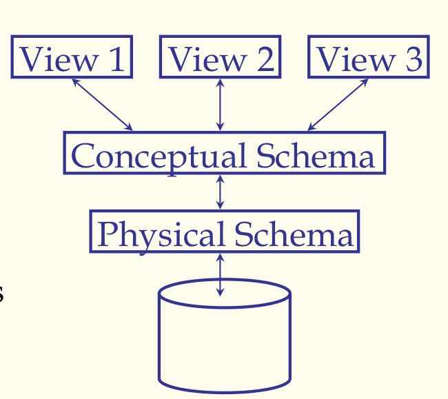
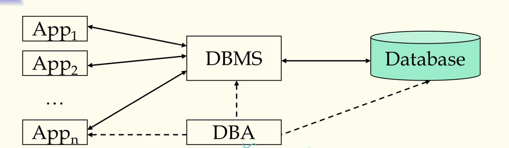
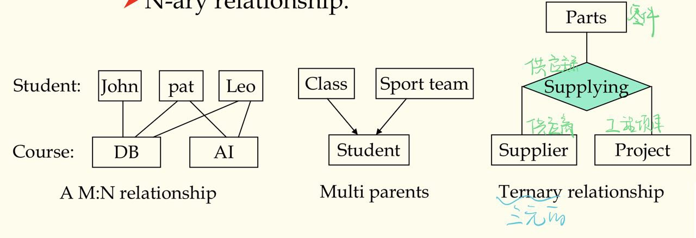
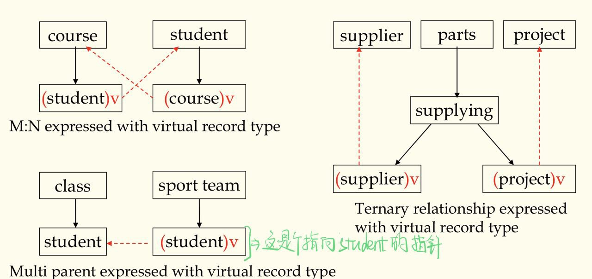
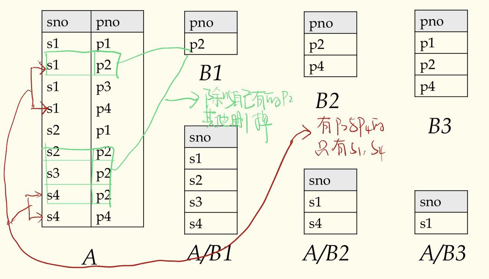
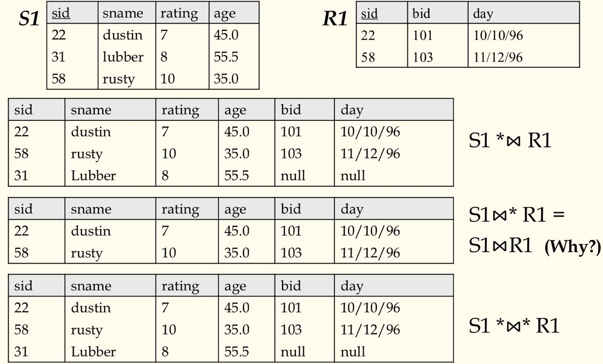
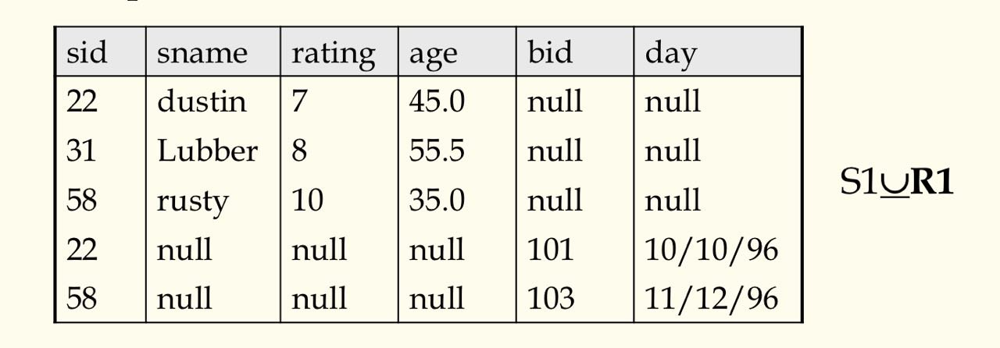
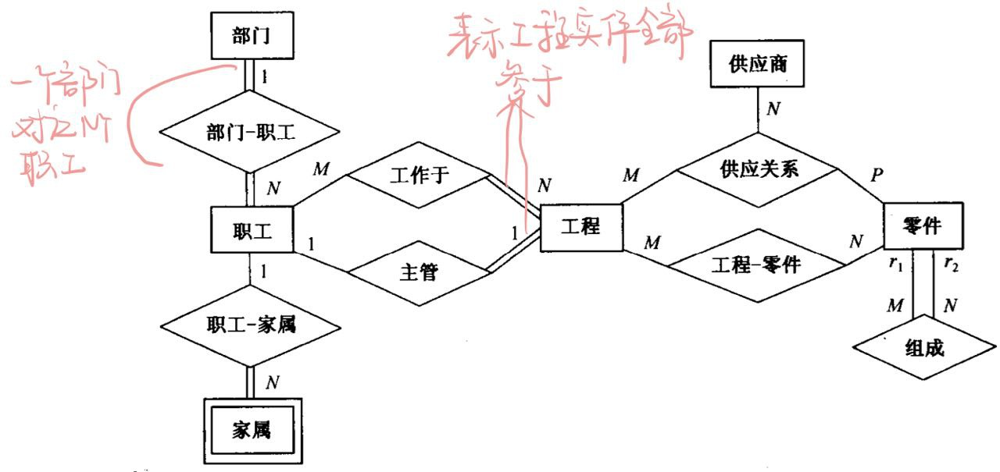

数据库管理系统第一，二，三章笔记
🚗
第一章 介绍
1.1 介绍
Database&DBMS
- 数据库：A very large, integrated collection of data
- 数据库系统： 一个设计来储存和管理数据库的软件包
- 文件与数据库的区别
- 数据量大
- 不同查询不同的代码
- 必须保持数据不变由于多位并发用户
- 奔溃能恢复
- 安全与访问控制
- 为啥用数据库系统
- 数据独立性与高效访问
- 减少应用开发时间
- 数据集成性与安全性
- 统一的数据管理员
- 并发访问，奔溃恢复
Data, Data Model and Data Schema
- 数据：描述现实世界的符号
- 数据模型：描述数据的一组概念和定义
- 数据模式：对给定的数据模型的具体描述，数据模型的实例化
高频考点：
- Data model: a collection of concepts and definitions for describing data.
- Data schema: a description of a particular collection of data, using a given data model.
三层抽象架构(ansi-sparc architecture)及其对数据独立性的支持
Schemas are defined using DDL
Data is modified/queried using DML
-
views:描述用户所看见的数据
-
conceptual(logical) schema:定义数据的逻辑结构
-
physical schema:描述文件与索引怎么用的

-
数据的独立性:
- Applications insulated(绝缘的) from how data is structured and stored
- Logical data independence: Protection from changes in logical structure of data
- Physical data independence: Protection from changs in physical structure of data
数据库系统
-
数据库系统组成

- 组成：应用，DBMS,数据库，DBA
- DBMS 是数据库系统的核心
- 高级的用户接口
- 查询过程与优化
- 目录管理
- 并发控制与恢复
- 完整性约束检查
- 访问控制
-
数据库系统的生命周期
- 数据库系统规划
- 数据库设计
- 数据库的创建
- 数据库运行，管理与维护
- 数据库的扩充与重构
第二章 数据模型
2.1 层次数据模型
基本概念
- 记录：描述事物与他们之间关系的数据单位，存储的数据单位,由多个字段构成
- 字段：简单的数据类型
- PCR(双亲子女关系，1:N 的关系)
- 分层模式：包含多对 PCRs，树状结构
拓展
- 虚拟记录：将层次数据模型推广到非层次型的数据（存在数据冗余）
- 多对多的关系(M:N)
- 一个记录型是两个以上的 PCR 的子女
- 多元关系

- 避免数据冗馀：只存一份记录，其他引用地方用指针代替。用指针代替的记录叫虚拟记录

- 大量指针增加数据库开销，数据模式也不够直观清晰
2.2 网状数据结构：不做要求
2.3 关系数据模型
关系型数据库的特点
- Based on set theory, high abstract level
- Shield all lower details, simple and clear, easy to understand
- Can establish new algebra system – relational algebra
- Non procedure query language – SQL
- Soft link – the essential difference with former data models

简单的概念们
属性和域
- 每个属性对应的值的集合是为取值的范围即为域
关系和元组
- 关系：就是表,属性是列，元组是行
- 关系的模式或型(schema)
- $R = (A_1, A_2…A_n)$称为关系 R 的 schema
- $A_i$是属性名
- n 称为关系的目
- 元组
- $r(R) = { t_1, t_2, …t_m}$,关系 R 表示为 r,为 n 目元组的集合
- $t = <v_1, v_2, …, v_n> v_i \in D_i$ 每个元组表示为 t，D 是域
键：
- 超键：在关系中能唯一标识元组的属性集(其子集也可以标识),候选键的爸爸
- 候选键： 某一属性或一组属性唯一的决定了一个元组,且其任何真子集无此性质（不含多余属性的超键）
- 主键：候选键中的一个
- 全键(all key):若主键由所有属性组成，则称为全键
- 候补键：候选键中除主键外的
- 主属性：包含在任何一个候选键的属性
- 非主属性：不包含在任何一个候选键的属性
- 外键：关系 R1 不是主键，关系 R2 是主键，则其为关系 R1 外键
最基本的三个完整性约束：
- 域完整性约束：属性值得在域中
- 实体完整性约束：一个关系内的约束，每个关系都要有一个主键，每个元组（实体）的主键值应唯一且不为 NULL
- 引用完整型约束：外键要么空缺，要么引用实际存在的主键值
关系代数
基础操作：(完整的操作集合)
- 选择($\sigma$) : 选择几行，后面是布尔表达式
- 投影($\pi$) : 选择几列，后面也是布尔表达式
- 笛卡尔积($\times$): 连接两张表
- 集合差(-): 就是集合的差，韦恩图都懂的
- 并($\cup$) : 集合的并嘛
额外操作：
- 连接($\Join$) : $R \Join_C S = (R\times S)$; C 是连接条件
- 除($\div$) : 除以自己有的，没的直接删

- 外连接:
- 左外连接($* \Join$) :连接结果只保留左关系的所有元组
- 右外连接($\Join*$) :连接结果只保留右关系的所有元组
- 全外连接($* \Join *$) : 保留左右两关系的所有元组

- 外并($\underline{\cup}$): 对非兼容的两个关系也可以并，那些元组中没有的属性就填 NULL

关系演算
关系代数表示关系操作，须标明关系操作的次序，注重过程,因而以关系代数为基础的数据库语言是过程语言
关系演算只要说明所要得到的结果，不必标明操作过程，注重结果,以关系演算为基础的数据库语言是非过程语言
共同点:They are equivalent in terms of expression. SQL language can express any query that is expressible in relational algebra/caculus.
元组关系演算(TRC)
一般形式：$\{ t[<属性表>] | P(t)\}$
关系模式：R(ABC), r 为 R 的一个值
- 投影:$\Pi_{AB}(r) = \{ t[AB] | t\in r \}$
- 选择:$\sigma_{F}(R) = \{t | t \in r \ AND\ F \}$
- 并:$r \cup s= \{t | t \in r \ OR\ t \in s\}$
- 差:$r - s = \{t | t \in r \ AND\ \urcorner(t\in s)\}$
设$R(ABC)$和$S(CDE)$,r,s 分别为其值
- 连接:$t \Join s = \{t[ABCDE]|t[ABC] \in r \ AND\ t[CDE]\in s\}$
- Why$\urcorner(t\in s)$ NOT $t\notin s$
- 好像是因为关系演算中没有$\notin$运算符
域关系演算(DRC)
一般形式: $\{ <x_1, x_2, …,x_n> | P(x_1, x_2, ….x_n, x_n+1, …x_n+m) \}$
- 前面部分为结果中出现的域
- 后面部分为结果中满足每条记录满足的条件
$$\pi_{sid, sname, age}(\sigma_{age>35}(S_1)$$
- TRC: $$\{t[sid,sname,age]|t\in S_1 \wedge t.age > 35\}$$
- DRC: $$\{<sid,sname,age>|<sid,sname,age>\in S_1 \wedge age > 35\}$$
- TRC 中用的 t.age 而不是 t[age]；DRC 则直接用域名来做运算；另外别忘了加限制集，不然查询结果无穷大
2.4 ER 数据模型(实体联系数据模型)
是上面三种传统数据模型互相转换的中间模型
ER 图
- 矩形：实体；双线矩形表示弱实体
- 菱形：关系
- 椭圆： 属性
- 弧上的数字表示联系的基数比；双线弧表示该实体全参与,单线表示部分参与

扩充 E-R 数据模型（我赌不考）
- 特殊化和普遍化：就是实体之间的继承,在弧上加$\cup$来表示
- 聚集：把参与联系的实体组合形成新的实体
- 范畴：超实体集并的子集
2.5 面向对象数据模型（没细讲）
其他数据模型
- 基于逻辑的数据模型
- 时态数据模型
- 空间数据模型
- XML 数据模型
第三章 用户接口和SQL语言
3.1 用户接口与 SQL 语言
- 关系代数是一种过程语言，以此设计的数据库语言，用户不仅要说明需要什么数据，还要说明获得这些数据的过程。
- 对用户来说，最好只说明需要什么数据，而如何获得这些数据则不必用户说明，而由系统来实现。即非过程语言。
- 非过程关系数据库语言里最成功的应用最广的:SQL 语言
3.2 SQL 语言概述
- SQL 指什么
- IBM:Structured Query Language
- ANSI(美国国家标准协会):Standard Query Language
- wiki 百科，以及大部分资料都解释为第一种
- SQL 按功能分为四大部分
- 数据定义语言(Data Definition Language):用于定义，撤销和修改数据模式
- 查询语言(Query Language)：用于查询数据
- 数据操纵语言(Data Manipulation Language)：用于增删改数据
- 数据控制语言(Data Control Language)：用于数据访问控制
3.3 SQL 数据定义语言(DDL)[上课没提]
- 关系又称表，关系数据库的基本组成单位。
- 表分为两类
- 基表：数据显式存在数据库中
- 虚表（试图 view）：仅有逻辑定义，可根据其他基表或视图导出，不显式存在数据库中
- 对基表的操作
- 增加列
- 删除基表
- 补充定义主键
- 撤销主键定义
- 补充定义外键
- 撤销外键定义
- 定义和撤销别名
- 索引的建立和撤销
3.4 SQL 查询语言(QL)
基本的 SQL 查询语句
基本格式
只有 SELECT 和 FROM 是必须的，别的子句可选
- SELECT 字句： 后接需要查询的项目
- FROM 子句： 指定了选择的数据表。FROM 子句也可以包含 JOIN 二层子句来为数据表的连接设置规则。
- WHERE 子句： 后接一个比较谓词以限制返回的行。WHERE 子句仅保留返回结果里使得比较谓词的值为 True 的行。
- GROUP BY 子句： 用于将若干含有相同值的行合并。 GROUP BY 通常与 SQL 聚合函数连用，或者用于清除数据重复的行。GROUP BY 子句要用在 WHERE 子句之后。
- HAVING 子句： 后接一个谓词来过滤从 GROUP BY 子句中获得的结果，由于其作用于 GROUP BY 子句之上，所以聚合函数也可以放到其谓词中。
- ORDER BY： 子句指明将哪个字段用作排序关键字，以及排序顺序(升序/降序)，如果无此子句，那么返回结果的顺序不能保证有序
执行顺序
| 子句 | 顺序 |
|---|---|
| SELECT | 5 |
| FROM | 1 |
| WHERE | 2 |
| GROUP BY | 3 |
| HAVING | 4 |
| ORDER BY | 6 |
SQL 的高端操作
- SELECT 后别名：可以用
=或AS
|
|
LIKE:用来模糊匹配字符串；_表示任一一个字符；%表示任意多个字符（包括 0 个）；上述表达为 B 开头与结尾长度至少为 3 的字符串UNION:对来能够给目相同的查询结果进行并操作，一般在 WHERE 子句中用OR代替
UNION操作必须去重，如果允许，在其后加ALL则不消除结果中的重复项- 多元
UNION操作需要利用圆括号多次使用二元UNION来实现
INTERSECT:对来能够给目相同的查询结果进行取交集操作，一般在 WHERE 子句中用AND代替- 嵌套查询(Nested Queries):在 FROM,WHERE,HAVING 子句中可以包含 SQL 查询
- ( NOT ) IN：前面有个主语,下例寻找定了 103 号船的水手姓名
|
|
(NOT) EXISTS:相关子查询，EXISTS后面不为空则
|
|
ANY和ALL:ALL满足范围中所有的则返回 trueANY满足范围中任意一个则返回 true,下例寻找得分高于任何一个名叫 Horatio 的水手
|
|
-
EXECPT:除操作好像 -
Aggregate Operators(聚集函数)
COUNT(*): 返回表的总条目数COUNT([DISTINCT] A):返回[不重复的]A 条目的总数SUM([DISTINCT] A):返回[不重复的]各个 A 属性的和AVG([DISTINCT] A):返回[不重复的]各个 A 属性的平均值MAX(A):A 属性的最大值MIN(A):A 属性的最小值
|
|
GROUP BY 和 ORDER BY 子句应用
GROUP BY
GROUP BY目的是让聚集函数作用于特定目标而非整个表
GROUP BY子句将表按列的值分组，列值相同的一组，若有多个列，则先按第一列分组，再按第二列分组HAVING后为选择基本组的条件
ORDER BY
- 对子句中指定的列进行排序，默认升序，
ASC表示升序,DESC表示降序 - 下例举出计算机系所开课程(成绩完整的 GRADE isn’t NULL)的最高最低和平均成绩
|
|
CAST expression
就是一些强制类型转换，
CAST (NULL AS Varchar(20))把 NULL 转字符串
CASE expression
PPT 上例子都是放在
SELECT子句后，作用就和一般的CASE语句差不多，不考吧
子查询
本节例题所用数据模型
dept(deptno, deptname, location)emp(deptno, salary, bonus)
标量子查询(Scalar sub-query)
返回值只有一个单值，不是元组；can be used in the place where a value can occur
寻找平均奖金高于平均薪水的部门的名字
|
|
表表达式(Table expression)
返回的是一个临时表(视图);can be used in the place where a table can occur
寻找总收入过两万的部门
|
|
公用表表达式(Common table expression)
有一个表被用了很多次，则可使用
WITH子句来定义它，是个临时的视图
寻找有最高收入的部门
|
|
递归查询
如果一个临时表在其定义中引用了自己，则发生递归;分为三步，初始查询，递归查询，终止查询
寻找所有在 Hoover 管理下的薪水超过 100000 的员工
|
|
这里应该还有外连接的 SQL 操作已经递归查询，但他妈的太复杂了,有心情写
- 递归查询好像挺重要，稍后攻克
3.5 数据操纵语言(Data Manipulation Language)
- Insert a tuple into a table
|
|
- Delete tuples fulfill qualifications
|
|
- Update the attributes' value of tuples fulfill qualifications
|
|
3.6 嵌入式 SQL(in C)
由于ISQL功能受限于数据库操作,缺少数据处理能力。这种能力宿主语言有呀，所以就把SQL嵌入到宿主语言中去。
嵌入式SQL的说明部分
-
SQL语句以
EXEC SQL开头，;结尾。 -
数据的传送通过宿主变量
-
宿主变量申明
- 系统定义者:
SQLCA(SQL Communication Area);其有个分量SQLCODE,它是一个整数，DBMS向应用程序报告SQL语句执行结果。
<0 =0 >0 100 错误未执行，负数值表示错误类型 无异常执行 执行但有异常，值表示异常类型 无值可取，可能没有符合条件的值也可能取完了 使用时直接包含即可
EXEC SQL INCLUDE SQLCA- 一般的宿主变量声明,开头
EXEC SQL BEGIN DECLARE SECTION, 结尾EXEC SQL END DECLARE SECTION;宿主变量可以与表的列名同名，SQL语句中使用宿主变量时前面要加:
- 系统定义者:
|
|
- 指示变量:indicator,也是宿主变量
- 宿主变量不能接受空缺符
NULL,此时在其后跟一个指示变量，其值为负则前面的宿主变量为NULL,否则不为NULL - 上例中
GRADEI指示GRADE
嵌入式SQL的可执行语句
包括
- 进入数据库系统的
CONNECT语句- 嵌入的DDL,QL,DML,DCL
- 控制事务结束的语句
CONNECT 语句
|
|
uid与pwd为两宿主变量
嵌入的SQL
- DDL和DML：除了前面加
EXEC SQL外与ISQL没有区别,如
|
|
- QL
- 查询结果为一个数组，直接将查询结果用
INTO子句对宿主变量进行赋值即可
- 查询结果为一个数组，直接将查询结果用
|
|
-
查询结果为超过一个数组新开辟一个区域，存放查询结果的区域及其相应的数据结果称为游标,使用分四步
-
说明游标语句
|
|
- 打开游标语句
|
|
打开游标时，执行与之相关的QL,其结果存于游标中,一经打开即使查询语句中宿主变量值改变，游标值也不会变，除非关闭后重新打开
- 取数语句
|
|
当游标中数取完，SQLCODE将返回100
- 关闭游标语句
|
|
- 一个完整的例子,宿主语言是c语言,为了打印一张gpa3.5以上同学的名单。
|
|